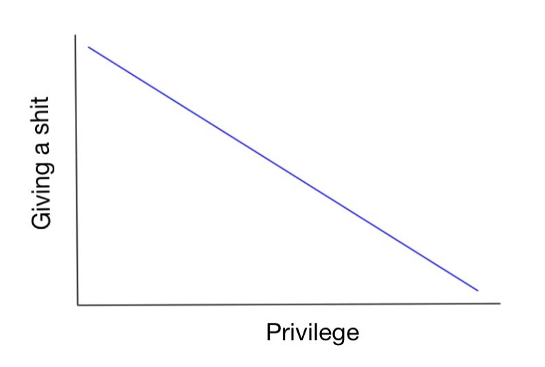

The proposed repeal of the fox hunting ban by a government with so little moral integrity they make Ted Bundy look like a Samaritan is hardly surprising. People are furious. Mostly, those people are focusing on how abhorrent such a thing would be for foxes. This, I imagine, comes from their not being ruthless, amoral psychopaths. But it's important to realise that even if - for some odd reason - you don't actually care about the rights of foxes, this isn't just about foxes. This proposal is symptomatic of a far greater issue within the current ruling political party, and to a thoroughly depressing extent, the niche echelon of society they faithfully serve.
This issue is one which, unless you happen to belong to that niche, will affect you. That same government fighting to repeal a ban on animal torture are, let's not forget, also fighting to scrap the Human Rights Act. Although these goals have different destinations, they are founded on shared values. So even if you don't care about foxes, remember that sitting back and accepting the repeal not only hurts foxes, it hurts you. It is your fight as much as the foxes. What we're talking about is the stripping of rights from those arbitrarily judged 'undeserving' by a small, unrepresentative group of privileged elitists. A small group with vested personal and financial interests in the stripping of those rights.
Foxes are living, feeling animals. You can draw whatever ridiculous parallels you like between them and any other animals - as Jeremy Clarkson did when he described the fox as "a disease-ridden wolf with the morals of a psychopath and the teeth of a great white shark" - but even if that were true, it doesn't change the fact that they're still just as much living, feeling creature as any other on the planet. It would be equally as disgusting if we were debating hunting wolves, or great white sharks for sport. (Pretty sure Jeremy Clarkson falls into the category of 'psychopath' so my feelings are a little more ambivalent on that.) But what these arguments come down to is whether it's ok to derive both pleasure and income from the torture of a living creature.
Now I would argue that most people, myself included, see the rights afforded to different life-forms as existing in something of a hierarchy. For me - and I realise I've probably given this more thought than most - bacteria exists at one end, humans at the other. There are still some things I would consider OK for non-human animals, like, keeping them as pets, microchipping them, neutering them, etc. that I wouldn't consider acceptable for humans. There is, however, one overarching rule that spans the entirety of that hierarchy, and it's pretty easy to grasp: Not deriving pleasure directly from the suffering of another living thing. I mean, literally, at no point is that OK. Now that's not to say that everyone who eats meat is necessarily breaking that cardinal rule. On the other hand anyone who supports fox-hunting, bull-fighting, or any other equally hideous blood sport in the name of 'culture' and 'heritage', is.
Oh and by the way, 'We've been doing it for ages.' is just about the worst justification for doing something that anyone has ever given. That's as much an argument for slavery, religion, the subjugation of women and a myriad of other shitty things as it is for blood sports. There was a time when we'd been living in caves and pooping in long grass for ages; we moved on, and that's no bad thing.
But we're not talking about those things, we're talking about fox-hunting. So why should it matter to someone who doesn't really care about foxes?
Two reasons. Firstly, empathy. Secondly, the values of opposing needs.
Empathy at its most basic level is a cognitive response. It's the ability to put yourself in the position of another and not just imagine, but also give a shit, about their experience. It's not just a human response either, plenty of research has shown that numerous mammals are capable of empathy. Other research has, alarmingly, shown that in humans, the capacity for empathy reversely correlates with wealth and privilege. Yup. So it's hardly surprising that the people most willing to engage in blood sports are also the wealthiest, most privileged members of society. It has nothing to do with 'normal' people being jealous of the elite. It has to do with the elite being (neurologically speaking) arseholes.
You see, there is absolutely no evidence based reason to believe that being chased by a pack of dogs and a bunch of sociopathic twats on horseback is any less horrific and petrifying for a fox than it would be for a human. Nor is there any reason to assume that being viciously attacked, having your flesh ripped from your bones and your limbs torn from your body is any less agonising for a fox than it would be for a human. The inability of hunt supporters to grasp (or care about) that, shows a shocking, but predictable, lack of empathy. Kind of alarming when you're talking about the same people who want to rewrite the rights of an entire nation, no?
I mentioned a hierarchy of rights, and an overarching rule of not deriving pleasure from the suffering of others, and that's a pretty big deal. Firstly, because to actually take pleasure in the suffering of someone else is a pretty fucked up state to be in. Secondly, because it elucidates something pretty important about the weighting given to opposing needs.
Say you find through no fault of your own, that your life depends on you taking the life of someone else, it's fair to say that those are equally weighted needs. In such situations, it's pretty much up to you which side of the fence you fall on. Likewise, if I have one slice of cake and (for some, inexplicable reason) can't cut it in half, it's kind of my responsibility to decide whether to give the slice of cake to someone else to enjoy, or keep it for myself. Again, equally weighted needs.
But when we talk about the weighting of needs in the fox-hunting debate, those on the side of hunting are essentially saying that their enjoyment of the hunt and any profits that may be generated from it, are more valuable than the life and freedom from torture of the animal. Just consider that for a moment:
Your right to kill for fun and profit.
vs
The fox's right not to be torn into pieces by dogs.
These are not equally weighted needs. Perversely, the greater value given by pro-hunters to their enjoyment of the hunt, attempting to justify torture, makes the whole endeavour worse. The idea that anyone could derive so much pleasure from blood sport as to think that it actually outweighs the suffering endured by the animal should definitely leave you with a bad taste in your mouth.
And again, if you think this is just about foxes, consider the parallels with this government's commitment to the zero hour contract and the impact that's having on people's lives. Zero hour contracts force people to live a life of poverty and uncertainty, under constant threat of losing their livelihood and with no ability to predict their earnings from one week to the next. For the thousands of people who live like this, it is real, powerful suffering.
For businesses, however, it's fantastic. It reduces costs, gives them freedom and flexibility, and a huge degree of power over their perpetually vulnerable workforce. And look at Mike Ashley, the billionaire owner of Sports Direct, one of the UK's biggest zero hours employers, whose shares rose by 4.5% when the Tories gained their second term, guaranteeing no end to the zero hour contract. Think how much pleasure that must've given Mr Ashley, knowing that his abuse and exploitation of the vulnerable would be safe to continue. It comes at the cost of thousands of people's financial security, and many other things as a consequence.
The 18th Century philosopher, Kant, once suggested that we should treat animals with compassion and kindness because it serves as a kind of 'good practice' for our interactions with humans (he also wrote the only book I've ever thrown across a room while screaming, just FYI). Now, personally I'd say there's just as much moral value in not being a dick to animals as to humans, but that aside, he had a point when it came to the relationship between how we treat animals and how we treat people. It's a matter of a person's capacity for empathy and respect; these traits are not open to compartmentalisation. The idea that you can feel compassion towards one group whilst restricting it from another is just utterly flawed; you either care about the suffering of others, or you don't. Plenty of people feel powerless to help, they bury their heads in the sand and that's understandable; it's not the same as not caring. But we're not talking about powerlessness, we're talking about action. We're talking about a government seeking to overturn a ban on torture and doing so with their heads held high. Any person willing to legislatively support a savage blood sport is clearly bereft of empathy and respect; and they're certainly not the kind of person to be trusted with the rights and welfare of an entire nation.
And hey, consider that we are now living under a government that felt the prohibition of various categories of consensual, adult pornography was essential to protecting the moral fibre of British society, but doesn't see the legalisation of animal torture as any threat whatsoever. Our rulers' moral compass is fucked. If you think it'll stop at foxes, or even that it'll stop at 'the poor', you're sadly mistaken. Personally, I think fighting for the rights of animals is a worthwhile cause, in and of itself. But if you really can't get motivated about their welfare, then please, be selfish and get motivated about your own. At the end of the day, it will all be the same fight.